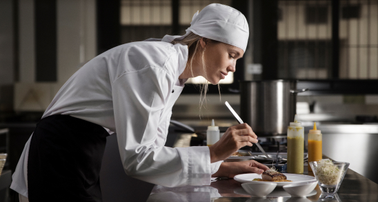
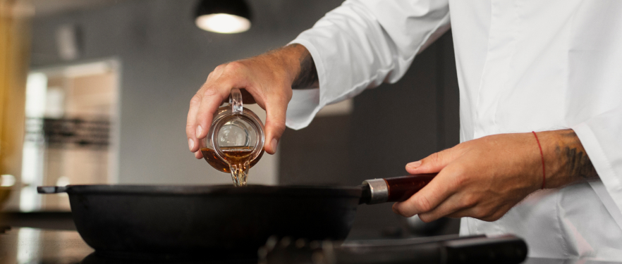
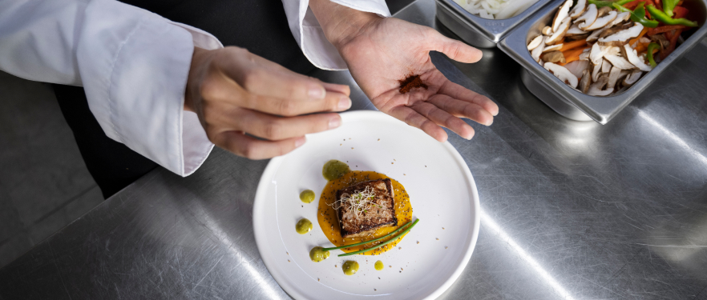
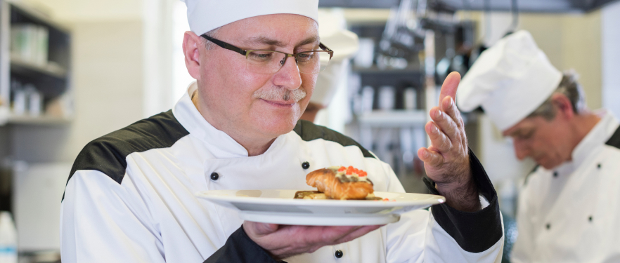

Behind the Scenes: A Day in the Life of a Catering Chef
Ever wondered what goes on behind the scenes in a bustling catering kitchen? For catering chefs, each day is a whirlwind of creativity, precision, and teamwork as they strive to deliver exceptional culinary experiences for events ranging from intimate gatherings to grand celebrations. Join us for an insider's look at a day in the life of a catering chef.
5:00 AM - Prep Begins: The day starts early for catering chefs. By 5:00 AM, they're already in the kitchen, prepping ingredients for the day's events. From chopping vegetables and marinating meats to baking bread and preparing sauces, meticulous attention to detail is key to ensuring that every dish meets the highest standards of quality and flavor.
7:00 AM - Menu Planning and Coordination: As the kitchen hums with activity, the head chef gathers with the catering team to finalize menus for upcoming events. They carefully consider client preferences, dietary restrictions, and seasonal ingredients to craft bespoke menus that will delight guests. Coordination is essential as they assign tasks, delegate responsibilities, and ensure that every detail is accounted for.
9:00 AM - Event Setup and Logistics: With the morning rush of prep work behind them, the catering team shifts their focus to event setup and logistics. They load up catering vans with equipment, tableware, and freshly prepared dishes, ensuring that everything is meticulously organized and ready to go. Whether it's a wedding reception, corporate luncheon, or private dinner party, impeccable execution is paramount.
11:00 AM - On-Site Preparation: Arriving at the event venue, the catering team springs into action, transforming the space into a culinary haven. They set up cooking stations, arrange tables and chairs, and meticulously plate dishes with artistic precision. Behind the scenes, chefs work tirelessly to ensure that every element of the dining experience exceeds expectations, from the appetizers to the dessert course.
2:00 PM - Service Begins: As guests begin to arrive, the catering team shifts into high gear, orchestrating a seamless dining experience from start to finish. Chefs man the cooking stations, carefully timing each dish to perfection, while servers circulate among guests, offering impeccable service and attending to their every need. Behind the scenes, the kitchen buzzes with activity as chefs put the finishing touches on each plate before it's whisked away to the dining area.
5:00 PM - Clean-Up and Breakdown: As the event draws to a close, the catering team's work is far from over. They meticulously clean and sanitize the kitchen, pack up equipment and leftovers, and ensure that the venue is left in pristine condition. It's a labor of love that requires teamwork, efficiency, and attention to detail, but the satisfaction of knowing they've helped create unforgettable memories for their clients makes it all worthwhile.
7:00 PM - Reflection and Planning: With another successful event under their belt, the catering team takes a moment to reflect on the day's accomplishments and celebrate their hard work. They discuss what went well and areas for improvement, gathering valuable insights to inform future events. As they look ahead to the next day's challenges, they're fueled by a passion for their craft and a commitment to excellence that drives them to continually raise the bar.
In conclusion, a day in the life of a catering chef is a whirlwind of activity, creativity, and collaboration. From early morning prep work to late-night clean-up, catering chefs work tirelessly behind the scenes to deliver exceptional culinary experiences that delight clients and guests alike. It's a demanding profession that requires skill, dedication, and a passion for hospitality, but for those who thrive in the fast-paced world of catering, there's no greater reward than seeing the smiles on their clients' faces and knowing they've helped create unforgettable moments that will be cherished for years to come.